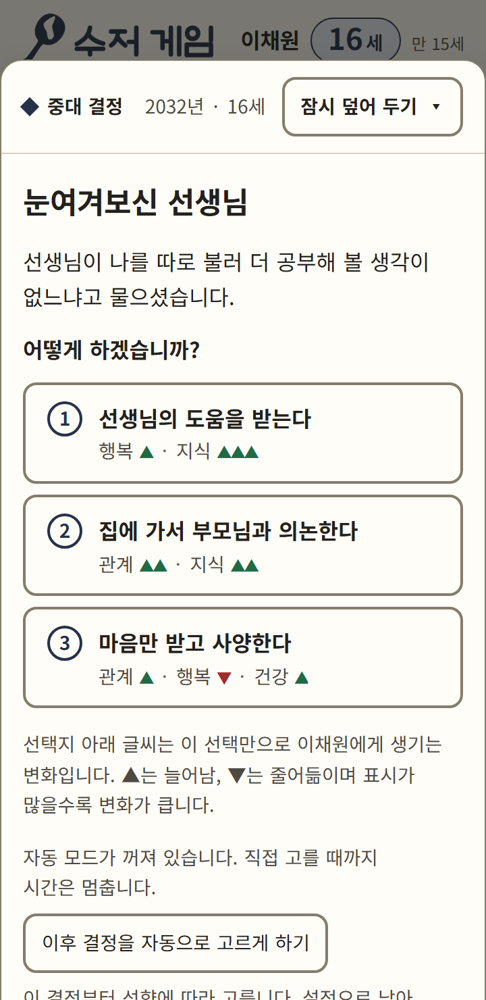
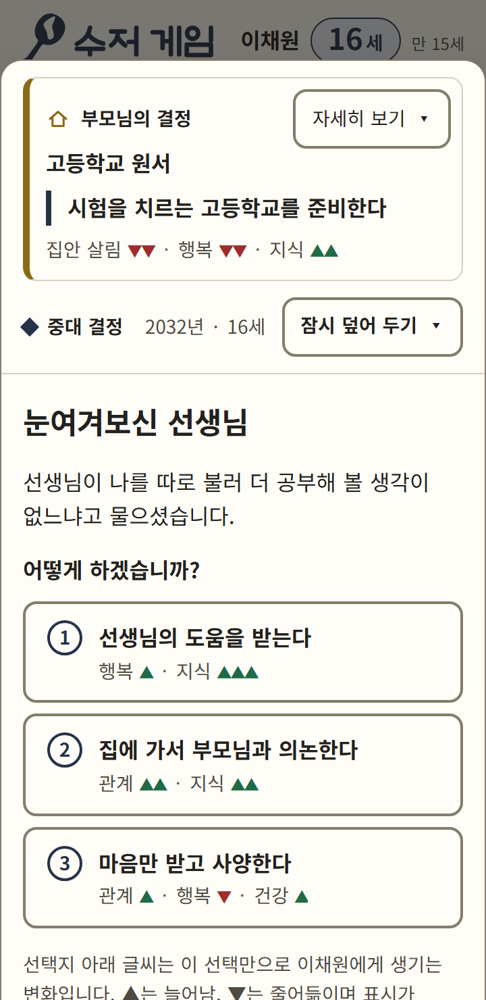
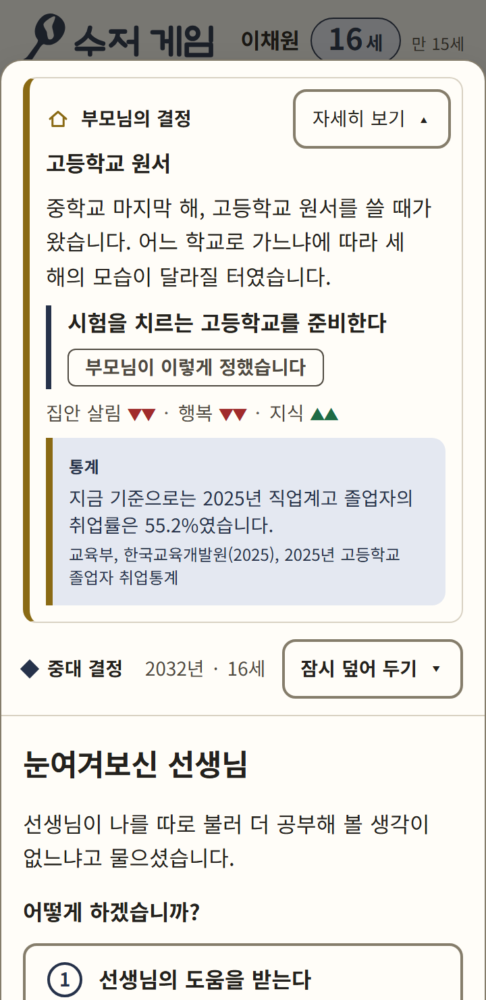
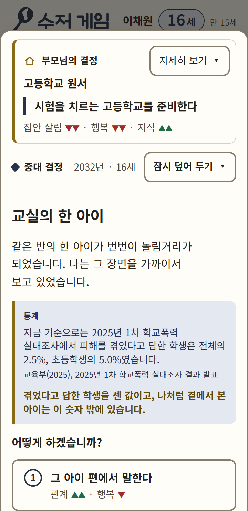
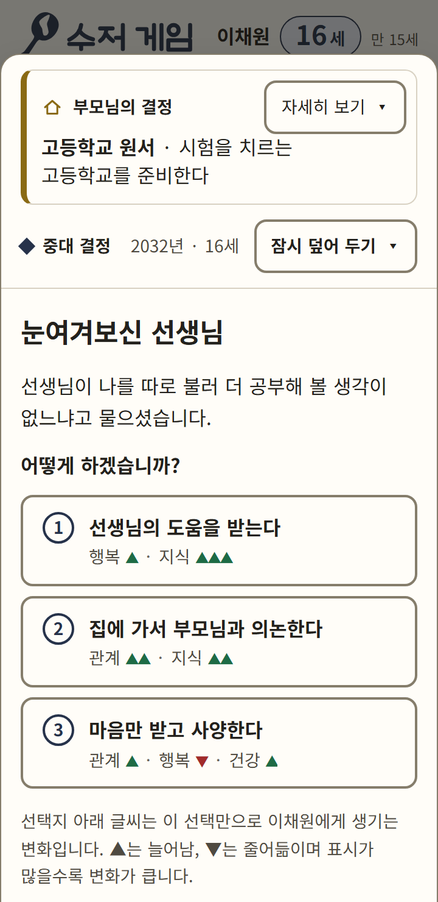
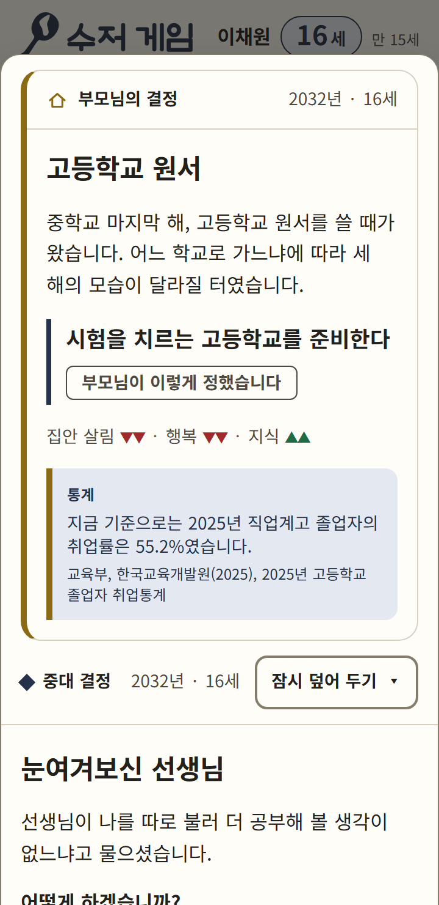
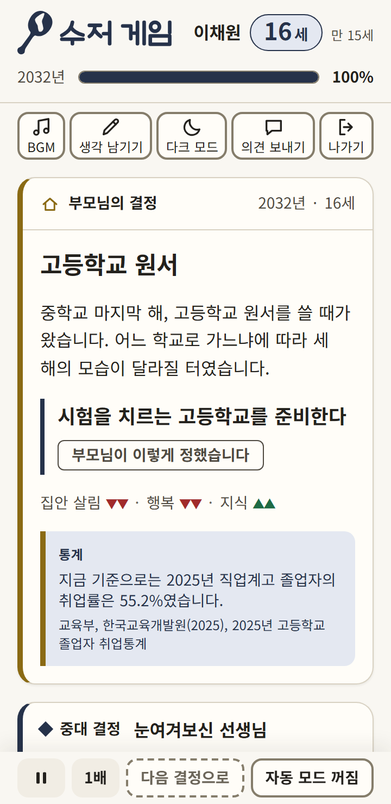
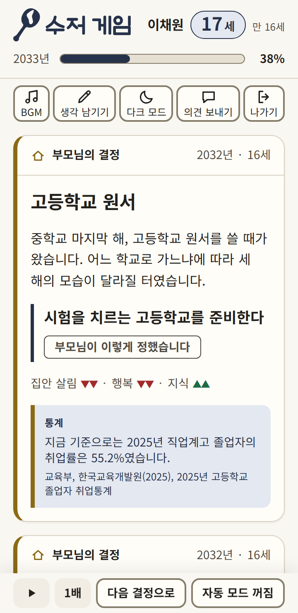
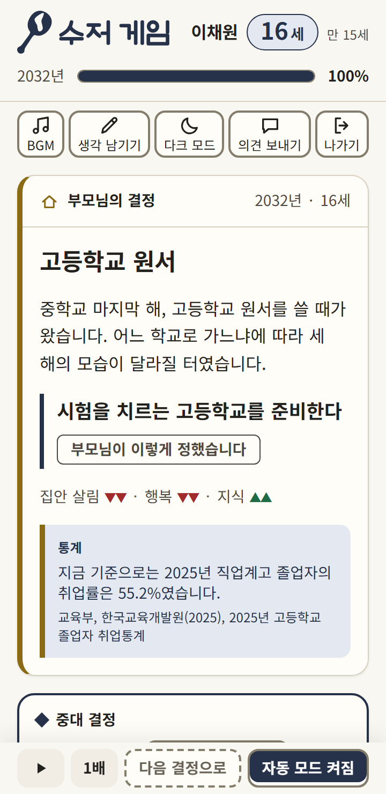
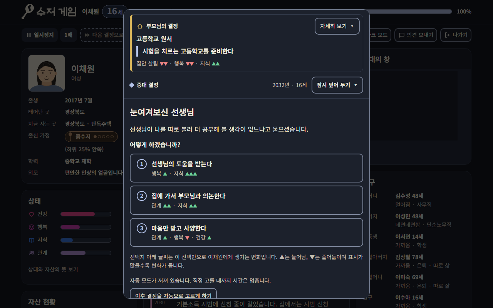

고등학교 원서를 같은 해에 함께
SPEC-018 G2 화면 시안 · 2026-11-17 designer · 형진 님 확인 전. 방향은 결정 후속 262 「G2 화면」 (1)~(4), 흐름은 ai-log/2026-11-17_SPEC-018_G2-plan.md 3-7절·10-4절. 대시보드·시트·카드는 spec-011 작업 트리의 개발 서버가 실제로 그린 화면(알파 세대 시드 311·4·2)을 옮겼고(화면 코드 src/ui·src/styles는 v0.6.0과 같다), 스타일은 구현 CSS(src/styles)를 그대로 불러 쓴다. 새로 더한 것은 시트 안 G2 요약 카드의 CSS 한 블록과 카드 배치뿐이다. 새 색 토큰·새 색 쌍·새 글꼴 조각·새 아이콘은 없다.
1. 화면 열기
- 지금(v0.6.0, 같은 해에는 G2가 없다): 수동 시트 · 자동 모드
- 상태 A 수동 · 추천 A1 요약 카드: 기본 · 펼침 · 인용과 풀이가 있는 본인 카드(가장 긴 경우) · 다크
- 상태 A 대안: A2 한 줄 띠 · A2 가장 긴 경우 · A0 전체 카드(고르지 않음) · A0 가장 긴 경우
- 상태 A를 「잠시 덮어 두기」로 접은 뒤: 접힘
- 상태 B 부모 카드 두 장: 라이트 · 다크
- 상태 C 자동 모드: 라이트 · 다크
캡처는 이 파일과 같은 폴더(docs/design/mockups/g2-together/)에 있다. 시안을 mockups/ 바로 아래가 아니라 이 폴더에 둔 까닭: tests/designAssets.test.ts R-190이 mockups/*.html의 수저 칩 화면 수를 14로 세는데, 평면에 두면 15가 되어 실패한다(qi5/의 전례). 이름은 {상태}-{폭}x{높이}[-dark|-forced|-text200].png, 360은 2배율.










2. 상태별 요점
상태 A · 15세 본인 카드(수동 모드)
- 결정 시트 맨 위에 G2 요약 카드를 둔다. 머리 줄은 칩 「부모님의 결정」과 「자세히 보기」, 그 아래 제목 「고등학교 원서」, 고른 길(쪽빛 막대), 영향 줄 순이다. 테두리와 왼쪽 놋쇠 막대는 대시보드 부모 카드와 같다.
- 상황 문장, 도장 「부모님이 이렇게 정했습니다」, 인용은 「자세히 보기」를 누르면 전체 카드와 같은 자리에 펼쳐진다. 연도·나이는 바로 아래 결정 카드 머리와 같은 해라서 G2 카드에는 두지 않는다.
- 시트의 이름, 첫 포커스(결정 카드 제목), Esc, 「잠시 덮어 두기」는 지금과 같다. 「다음 결정으로」로 15세 카드에 도착했을 때(결정 (3))도 같은 모양이다.
- 접으면 G2는 가운데 열 맨 위에 대시보드의 부모 카드 모양 그대로 남고, 그 아래에 접힌 띠가 온다.
상태 B · 15세 카드도 부모·흘러감인 해
- 결과 연출 한 구간에 [G2 카드 → 그 해 카드]를 쌓는다. 두 장 모두 지금 부모 카드 그대로이고 새 규칙이 없다. 판의 첫 부모 카드 안내는 위 카드에만 붙는다.
- 360×740에서는 둘째 카드의 머리(646px)가 진행 줄(692px) 위로 보여 아래에 한 장이 더 있다는 것이 드러난다. 대기 시간은 두 카드의 읽기 필요량 합이다.
상태 C · 자동 모드
- 가운데 열 맨 위에 [G2 전체 카드 → 인라인 결정 카드]. 자동 선택 지연은 G2 읽기 필요량(최대 약 37초 ÷ 배속)이다. G2를 전체 카드로 두어야 화면의 글 양과 지연 계산이 맞는다.
- 360에서는 인라인 카드 제목이 첫 화면 아래(763px)에 온다. 지연이 그만큼 내려 읽을 시간을 준다.
측정 (시안, 크로뮴, 글자 100%, 화면 위에서 px)
| 360×740 | G2 카드 | 결정 제목 | 첫 선택지 | 셋째 선택지 |
|---|---|---|---|---|
| 지금 now-A | 없음 | 134 | 283–358 | 449–524 |
| A1 요약 카드(추천) | 57–208 | 297 | 445–520 | 612–687 |
| A1 펼침 | 57–461 | 550 | 698–773 | 화면 밖 |
| A2 한 줄 띠 | 57–168 | 257 | 406–481 | 572–647 |
| A0 전체 카드 | 57–524 | 613 | 761–836 (화면 밖) | 화면 밖 |
| 가장 긴 본인 카드(「교실의 한 아이」, 인용 + 풀이 줄): 지금 첫 선택지 502–578 → A1 665–740(화면 끝에 맞음) · A2 625–700 · A0 980–1056(화면 밖) | ||||
| 1280×800 | G2 카드 | 결정 제목 | 선택지 셋 |
|---|---|---|---|
| 지금 now-A | 없음 | 150 | 273–515 |
| A1 요약 카드 | 37–187 | 276 | 399–641 |
| A1 가장 긴 본인 카드 | 37–187 | 276 | 580–821 (시트 아래끝 776 — 셋째는 시트 안 스크롤) |
| B 두 장 | 125–529 | 둘째 545–969 | — |
| C 자동 | 125–529 | 632 | 755–996 |
넘침: 360·1280 모든 상태와 폭 320 · 글자 200%(A, A 펼침, B)에서 문서·시트 가로 넘침 0. 글자 200%에서는 「자세히 보기」가 칩 아래 줄로 내려간다. 「자세히 보기」의 글자는 지금 글꼴 조각(400·700)에 모두 있다.
3. 고르실 것
- 시트 안 G2 카드 모양
- (가) A1 요약 카드: 칩 · 제목 · 고른 길 · 영향 줄, 나머지는 「자세히 보기」로 펼침. 추천. G2의 효과는 이미 스탯에 들어가 있어 영향 줄이 보여야 왜 바뀌었는지 알 수 있고(표기 = 실제 효과), 가장 긴 본인 카드에서도 첫 선택지가 360×740 한 화면에 들어간다.
- (나) A2 한 줄 띠: 「고등학교 원서 · 시험을 치르는 고등학교를 준비한다」 한 문단만 두고 영향 줄도 접는다. 40px 더 짧지만, 펼치기 전에는 스탯 변화의 이유가 보이지 않는다.
- (다) A0 전체 카드를 시트 안에 그대로 둔다. 360×740에서 결정 제목이 613px, 첫 선택지가 화면 밖이다. 고르지 않는다.
- 펼침 단추 이름(새 고정 문구 하나): 「자세히 보기」 추천 / 「원서 카드 펼치기」 / 「상황과 통계 보기」. 기존 「펼쳐서 읽기」(무거운 장면 가리기의 단추)는 다시 쓰지 않는다. 같은 이름이면 G2를 가린 무거운 장면으로 읽게 된다. 펼친 뒤에는 이름은 그대로 두고 ▾가 뒤집히며
aria-expanded가 바뀐다. - 상태 B·C는 결정 후속 262 (2)·(4)대로 그렸다. 캡처로 확인만 받으면 된다.
4. 문구
- 새 고정 문구: 펼침 단추 하나(위 3-2). 둘 곳은
src/data/dashText.ts(예:leadMore), 기록은copy.md새 절. - 그대로 다시 쓰는 것: 칩·도장·안내(
parentWording), 제목·상황·고른 길(school.jsonschool-high-pick), 인용(c-075), 영향 줄 낭독(impactText), 「중대 결정」 머리 전부.
5. SPEC-005 LR5 (b)·PD8 (a)에 달 예외 문장 초안
LR5 (b) 끝에 덧붙임: 「예외: 같은 해 덧카드(SPEC-018 G2 「고등학교 원서」, 결정 후속 255·262). 15세에 본인 결정 카드와 G2가 같은 해에 뜨면 G2 카드를 결정 카드 위에 둔다(연표 순서 「G2 → 그 해 카드」와 같다). 수동 모드에서는 결정 시트 안 맨 위에 요약형으로 두고, 자동 모드이거나 결정 카드를 접었을 때는 가운데 열 맨 위에 [G2 카드 → 인라인 결정 카드 또는 접힌 띠] 순으로 둔다. 그 해 카드도 부모·흘러감 카드이면 [G2 카드 → 그 해 카드]를 한 결과 연출 구간에 쌓는다. 이 예외는 G2 동반 해에만 적용하고, 다른 부모 카드의 자리는 그대로다.」
PD8 (a) 끝에 덧붙임: 「예외: G2 동반 해(LR5 (b) 예외)에는 모달 시트 안 맨 위에 부모 결정 카드 한 장(G2)을 요약형으로 함께 둔다. 요약형은 칩·제목·고른 길·영향 줄을 보이고, 상황 문장·도장·인용은 「자세히 보기」로 펼친다. 누를 것은 이 단추 하나다(선택지·「잠시 덮어 두기」·자동 고르기 없음). 시트의 이름(aria-labelledby), 첫 포커스, Esc, 접기는 결정 카드의 것 그대로이고, 시트 설명(aria-describedby)이 G2의 칩·제목·고른 길을 가리킨다. 접힌 띠에는 넣지 않는다. 접으면 G2는 띠 위 가운데 열에 전체 카드로 남는다.」
6. 접근성 메모
읽기 순서(DOM 순서 = 화면 순서)
- A: 시트 [G2 요약 카드: 칩 → 「자세히 보기」 → 제목 → (상황) → 고른 길 → (도장) → 영향 줄 → (인용)] → 결정 카드 머리 → 제목 → 상황 → (인용) → 질문 줄과 선택지 → 안내 → 자동 고르기 묶음. 괄호는 펼쳤을 때만 있다(
hidden, DOM 순서는 그대로). - B: G2 카드 → 그 해 카드 → 집과 가족 그림 → 인생 기록. C: G2 카드 → 인라인 결정 카드 → 그 아래 지금과 같음. 360 한 열에서는 둘 다
order: -1이고 DOM 순서대로 쌓인다.
초점
- A: 시트가 열리면 결정 카드 제목(
dc-title)으로 간다(지금 규칙 11-10 그대로). Tab은 첫 선택지로, Shift+Tab은 「잠시 덮어 두기」를 거쳐 「자세히 보기」로 간다. 단추를 눌러도 초점은 단추에 남고, 펼친 글은 같은 카드 안 아래쪽에 생긴다. 「자세히 보기」도 선택지와 같은 가드 키의 입력 가드(400ms)를 받는다. - 접기(Esc, 「잠시 덮어 두기」)는 지금처럼 접힌 띠의 「결정 다시 열기」로 간다. G2 전체 카드는 그 위에 비모달로 있고 초점을 가져가지 않는다.
- B·C: G2 카드는 초점을 가져가지 않는다(지금 부모 카드 규칙).
낭독
- A: G2 줄은 시트가 뜨기 전 같은 걸음에 인생 기록에 붙는다. 시트가 떠 있는 동안
main이inert라 그 줄은aria-live로 읽히지 않고, 시트를 닫은 뒤에도 「추가」가 아니라서 읽히지 않는다. 그래서 시트에aria-describedby="lc-chip lc-title lc-label"을 단다. 열릴 때 「눈여겨보신 선생님, 대화상자」 다음에 「부모님의 결정 고등학교 원서 시험을 치르는 고등학교를 준비한다」가 한 번 읽힌다. 화면 글자를 가리키므로 새 문구가 없다. 확인할 것: NVDA·TalkBack 실기에서 설명이 이름 뒤에 한 번만 읽히는지. - B: 수동·1~2배속이면 인생 기록이
polite이다. 한 걸음에 두 줄이 붙는데, 최신순이라 그 해 카드 줄이 위, G2 줄이 아래다. 낭독은 DOM 순서(그 해 카드 → G2)로 날 가능성이 커 화면 순서와 반대다. 두 줄 모두 읽히고 순서만 다르다. 미확인: 구현 뒤 실기로 듣고, 거슬리면 그때 고친다(인생 기록의 최신순 규칙은 바꾸지 않는다). - C: 자동 모드에서는 인생 기록
aria-live가 꺼져 있다(배속 4 이상·자동 모드 규칙). G2 카드와 인라인 카드 모두 정적이라 새로 읽히는 것이 없다. 지금과 같다.
색·강제 색상·글자 크기
- G2 카드와 결정 카드는 색만으로 가르지 않는다. 집 글리프와 「부모님의 결정」 칩, 「◆ 중대 결정」 머리, 테두리(G2 1px · 결정 시트) 세 가지로 갈린다.
- 강제 색상에서는 놋쇠·쪽빛 막대가 CanvasText가 되어도 자리와 칩 글자가 뜻을 전한다. 「자세히 보기」 테두리도 CanvasText다(
A-360x740-forced.png,B-1280x800-forced.png). - 대비 쌍은 모두 기존 것(
design-system.md13-2)이고 새 쌍은 없다.
7. 고르지 않은 대안과 이유
- A0 전체 카드를 시트 안에 그대로: 360×740에서 결정 제목 613px, 첫 선택지 761px로 화면 밖이다. 「제목과 첫 선택지는 스크롤 없이 보인다」(
design-system.md11-10 구현 확인)가 깨진다. - G2를 결정 카드 아래(LR5 (b) 원래 자리)에: 수동 모드에서 시트가 덮어 G2가 보이지 않는다. 후속 255의 목적(노출)을 놓친다(구현 전 기록 10-1 1).
- 결정 카드 머리 아래, 제목 위에 띠로: 「◆ 중대 결정」 머리가 두 결정을 한 카드로 묶어 G2가 본인 결정의 일부로 읽힌다.
- 시트 위쪽에 탭 둘(원서 / 이번 결정): 한 시트에 두 화면이 생겨 숨은 쪽을 모를 수 있고 조작이 늘어난다.
- B에서 G2를 요약형으로: 360에서 둘째 카드까지 보이지만, 결과 연출 대기는 두 카드 전문의 읽기 필요량 합이다. 사람이 펼칠 계기가 없는 흐름에서 글을 접어 두는 셈이다.
- C에서 G2를 요약형으로: 같은 이유에 더해, 자동 선택 지연(최대 약 37초 ÷ 배속)과 화면에 보이는 글 양이 어긋난다.
- 두 결정을 한 테두리에 묶은 새 카드: 새 부품과 새 규칙이 필요하다. 지금 부모 카드 두 장이 같은 모양으로 쌓이는 것으로 충분하다.
- 결정 카드를 잠시 숨기고 G2만 먼저 보이는 구간: 구현 전 기록 10-2에서 이미 기각했다(수동 모드에도 24~37초 대기가 생긴다).
8. 구현 메모 (developer, 형진 님 확정 뒤)
- DOM:
section.card.decision.decision--parent.lead-card(시트 안은.lead-card--compact추가),data-testid="lead-card",aria-labelledby="lc-title". id는lc-chip · lc-title · lc-text · lc-label · lc-stamp · lc-cite, 안쪽 testid는lead-접두다. 지금 부모 카드의pc-title·parent-card는 그대로라 B에서 두 장이 겹치지 않는다(계획 3-7). - 시트:
DecisionSheet안DecisionCard앞에 요약 카드, 대화상자에aria-describedby. 「자세히 보기」 =btn btn--ghost btn--sm+aria-expanded+aria-controls="lc-text lc-stamp lc-cite"(인용이 없으면 그 id는 빼기). 펼침은 카드의 지역 상태다. 저장하지 않고, 틱이 바뀌면 닫힌다. - CSS: 이 시안
<style>의 「G2 덧카드」 블록을dash.css「부모님이 정한 카드」 블록 뒤에 같은 글자로 옮긴다. 전체형(B·C·접힘)은 더할 규칙이 없다. - 판의 첫 부모 카드 안내(
firstParent)가 G2에 붙는 드문 판에서는, 요약형이면 펼친 영역 끝에 둔다. - 무거운 장면 가리기:
school-high-pick에는heavy표지가 없다. 가림 분기는 지금ParentCard규칙을 그대로 따르면 된다. - 시험 갈고리(제안): 360×740 · 글자 100%에서 [G2 카드 아래끝 < 결정 제목 위끝]과 [첫 선택지 아래끝 ≤ 화면 높이](인용 있는 본인 카드 포함), 폭 320 · 글자 200%에서 시트 가로 넘침 0, B에서
lead-card가parent-card보다 DOM 앞.